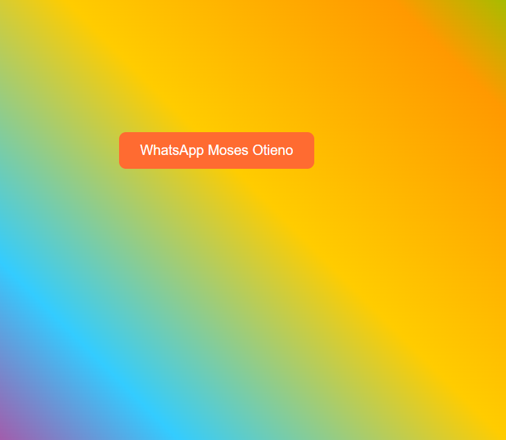
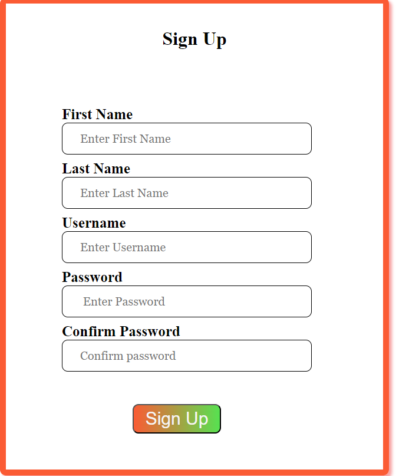

I am a passionate and dedicated front-end developer with a flair for creating seamless and user-friendly web experiences. With a strong foundation in HTML, CSS, and JavaScript, I bring digital designs to life, turning visions into interactive, visually appealing websites and web applications.
I posses a diverse skill set, including technical skills related to web development.
Descriptors such as hardworking, faithful, passionate, self-motivated, confident, and self-driven characterize his personality and work ethic.
My educational background and active participation in voluntary activities demonstrate my commitment to personal and professional growth.
.
I'm a self-motivated software developer with advanced skills in software development and a strong understanding of current computer technology.
I'm an experienced clerk with exceptional typing and data entry abilities, characterized by a results-driven nature.
I'm knowledgeable about logging daily information, researching variances, and maintaining thorough records.
I'm accuracy-driven, service-oriented, and diligent about completing tasks with little supervision.
I showcases a strong educational background in computer science and media applications, complemented by a diverse set of skills, including communication, creativity, and project management.
My experience as a clerk volunteer at IEBC reflects my commitment to delivering quality service and my proficiency in various tasks such as data entry and document management.
I'm fluent in both English and Swahili, and his interests in reading, music, and research demonstrate a well-rounded and curious personality.
My Services
Web Development
I am a highly self-motivated and goal-oriented software developer with an in-depth understanding of current computer technology. My skill set extends beyond conventional software development to include system analysis and design. I take pride in my advanced proficiency, allowing me to conceptualize, design, and implement intricate systems with precision and efficiency.
.
As a software developer, I wield Python as a powerful tool, showcasing my ability to craft robust and scalable solutions. On the front-end, I excel in HTML, CSS, and JavaScript, seamlessly blending design and functionality to create visually appealing and interactive user interfaces. This front-end expertise ensures a seamless user experience, where design and functionality harmoniously come together.
In addition to my programming prowess, I possess specialized knowledge in compiler construction, demonstrating my expertise in the intricacies of language implementation. This in-depth understanding allows me to optimize code execution and enhance overall system performance.
I am a well-rounded software developer, capable of navigating diverse languages and technologies. My commitment to staying abreast of industry trends positions me as a forward-thinking professional, ready to adapt to the dynamic landscape of software development. Whether it's system analysis, front-end development, or language implementation, I am an enterprising and innovative individual consistently striving for excellence in every facet of my work.
Graphic design
I am an exceptionally skilled and versatile graphic designer, proficient in a diverse array of design tools and software, including Adobe Photoshop, Illustrator, and InDesign. My technical acumen extends beyond traditional graphic design, as I am well-versed in Python for scripting, HTML, CSS, and JavaScript for web design. Additionally, my solid understanding of compiler construction showcases my adaptability and depth of expertise.
.
My design principles are robust, reflecting a keen eye for aesthetics and mastery in color theory, typography, hierarchy, composition, shapes, and layout. I bring a creative flair and innovative mindset to my work, aiming not just to design but to create visually striking and effective solutions.
In addition to my technical prowess, my soft skills set me apart.
My communication skills are exceptional, enabling me to articulate and convey design concepts effectively. My collaborative nature fosters a positive working environment, and my problem-solving abilities ensure that I approach design challenges with ingenuity and efficiency.
My time management and organizational skills, coupled with the ability to multitask, speak volumes about my efficiency in handling complex design projects.
My adaptability and creativity make me a valuable team player, while my empathy and teamwork skills contribute to a collaborative and positive work culture.
In summary, I am not just a graphic designer; I am a dynamic and innovative professional with a holistic skill set. My proficiency in a wide range of design tools, coupled with my strong soft skills, positions me as a standout graphic designer capable of tackling diverse and challenging design projects with creativity and precision.
Digital marketing
As a highly accomplished digital marketer, I am distinguished by my adeptness in content marketing, showcasing a talent for producing and disseminating high-quality content that not only captivates but also cultivates a genuine interest in brands. My approach to content creation is marked by creativity, precision, and a keen understanding of audience engagement dynamics. I am proficient in leveraging storytelling techniques to create narratives that resonate with target audiences, fostering brand loyalty and interest
.
In the realm of social media marketing, I am a strategic expert, proficiently utilizing various platforms to build a dedicated following and effectively direct customers to websites. My social media endeavors are marked by a strategic approach, combining creativity with data-driven insights to enhance brand visibility. I am adept at harnessing the power of advertising, utilizing hashtags effectively, and curating engaging business pages to create a compelling online presence.
In terms of web design, my skills extend beyond the basics, encompassing a solid understanding of design principles that seamlessly incorporate a company's logo and branding. I approach web design with meticulous attention to detail, ensuring a visually appealing and cohesive online presence that aligns with the brand's identity.
Communication is a cornerstone of my digital marketing proficiency. I possess the ability to craft compelling blog posts and execute impactful social media campaigns, demonstrating effective written and verbal communication skills. My communication style is characterized by clarity, persuasiveness, and a keen awareness of the target audience's preferences.
Within the realm of SEO, I am a meticulous practitioner, utilizing tools to optimize content for enhanced visibility, relevance, and credibility. My analytical skills come to the fore as I delve into data analysis, extracting valuable insights and trends that inform strategic decision-making.
I am known for my ability to interpret complex data sets, translating them into actionable strategies that drive digital marketing success.
Beyond these technical skills, I bring a host of additional qualities to the table. I am adaptable and possess creative problem-solving abilities, thriving in the dynamic landscape of digital marketing. My persistent pursuit of excellence, coupled with a curiosity and love for learning, ensures that I stay at the forefront of industry trends. As a leader, I foster effective team collaboration, applying business acumen and analytic skills to drive successful digital marketing initiatives.
In essence, I am a dynamic and strategic digital marketer, combining technical prowess with creativity and strategic thinking to orchestrate and execute successful digital marketing campaigns. My proficiency in content marketing, social media strategies, web design, and analytics positions me as a versatile and impactful contributor in the ever-evolving field of digital marketing.
LatestProject

Whatsaap contact linking
I am dedicated to pushing the boundaries of what's possible in the world of front-end development. Feel free to explore my portfolio to see some of my best work and get in touch to discuss potential collaborations or exciting projects.
SIGN IN
I am dedicated to pushing the boundaries of what's possible in the world of front-end development. Feel free to explore my portfolio to see some of my best work and get in touch to discuss potential collaborations or exciting projects.

SIGN UP
I am dedicated to pushing the boundaries of what's possible in the world of front-end development. Feel free to explore my portfolio to see some of my best work and get in touch to discuss potential collaborations or exciting projects.